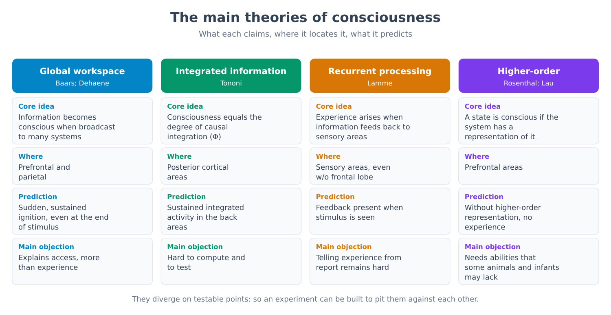
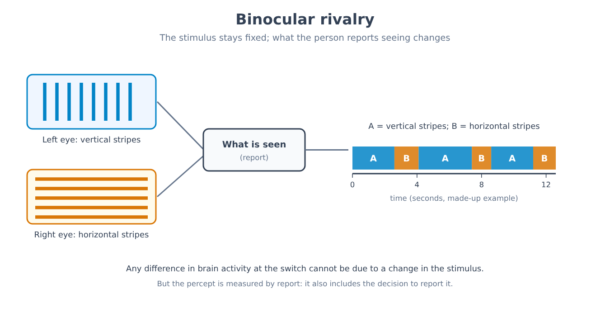
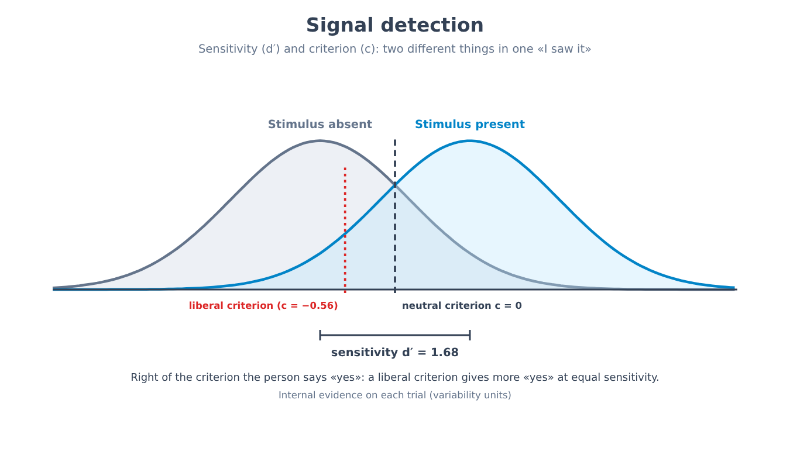
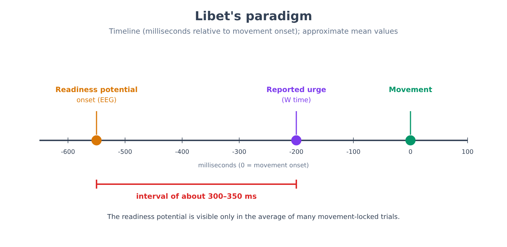
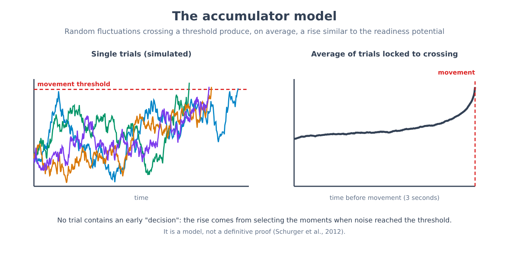
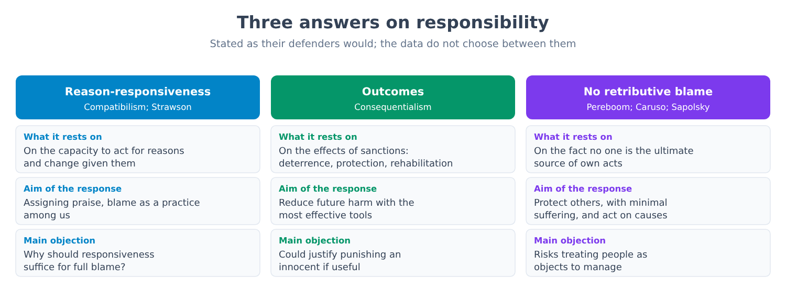
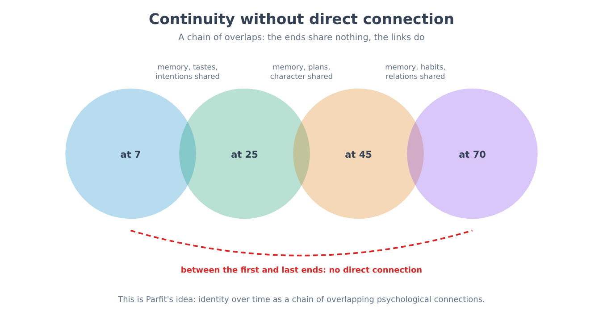
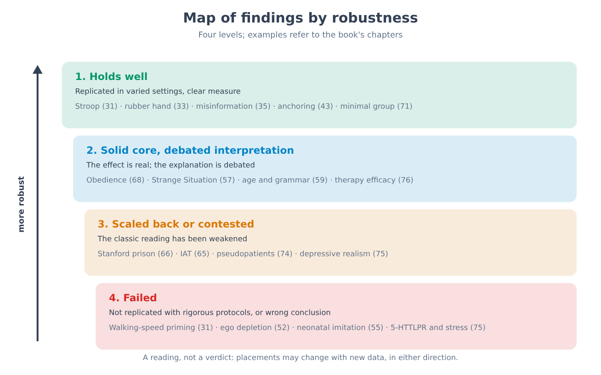

Part XIII. The three questions that remain
Chapter 78 — Consciousness: why it is a problem and not just a puzzle to be solved
[IN A NUTSHELL]
Many chapters of this book have dealt with processes that take place without our noticing: perception, memory, decision. What remains to be asked is what distinguishes what we notice from what never reaches awareness, and why there is “something it is like” to see red or to have a toothache. This chapter distinguishes three meanings of the word “consciousness,” sets out the problem that scholars call “hard” and the answers that have been given to it, explains what a neural correlate is and what it is not, presents the main theories, and recounts the first direct experimental comparison between two of them, completed in 2025. The aim is to make clear what is known, what is under debate, and what experiments can and cannot decide.
Anyone reading this page knows what it means to have an experience: there is a way the red of a traffic light appears, a way the taste of coffee is felt, a way a tooth hurts. No one has to learn how to do it, and no one can prove it to anyone else. It is also a fact that scientific psychology, for almost the entire twentieth century, kept the topic on the margins: chapters 14–19 described how behaviorism had excluded from its program whatever could not be observed from the outside, and chapters 29–31 showed how much work the brain does without the person concerned knowing it. Since the 1980s and 1990s consciousness has once again become an object of experimental research, and this chapter and the next describe what has been done with it.
The chapter title contains a distinction worth clarifying right away. A puzzle, in the scientific sense, is a question for which one knows more or less what kind of answer to look for: how energy is produced in the cell, how a memory is consolidated. A problem in the sense of interest here is a question for which it is not even clear what a satisfactory answer would look like. On consciousness, scholars disagree on the second point, even before the first.
Three things called “consciousness”
The word gathers at least three meanings, and many fruitless debates arise from confusing one with another. The first is wakefulness (arousal): the state of someone who is awake and responsive, in contrast to someone in deep sleep, under general anesthesia, or in a coma. This is consciousness as a level, which chapter 26 touched on in discussing sleep, and which depends on structures of the brainstem and the thalamus. A person can be awake without this saying much about what they are experiencing at that moment.
The second meaning is access consciousness, a term introduced by the philosopher Ned Block (1995): the fact that a piece of information is available to the system as a whole, that is, can be reported in words, used to make decisions, remembered, combined with other information. It is a functional property and can be studied with laboratory methods: one asks the person what they saw and compares the answer with the stimulus.
The third is phenomenal consciousness: the fact that there is something it is like to be in a certain state. Philosophers call the qualitative aspects of this experience qualia, such as the redness of red or the painfulness of pain. Here lies the problem: access can be measured; experience is what remains once everything that can be measured from the outside has been taken away.
From here on, when the text says consciousness without further qualification, it will mean having an experience of something, in the phenomenal sense; when it speaks of access or of wakefulness it will say so. Whether the last two meanings can come apart, that is, whether one can have access without experience or experience without access, is one of the open questions, not a thesis the text adopts.
The problem called “hard”
In 1995 the philosopher David Chalmers proposed dividing questions about consciousness into two groups. The “easy problems” concern mechanisms: how the brain discriminates stimuli, integrates information, controls behavior, produces a verbal report of what goes on inside it, distinguishes waking from sleep. They are called easy not because they are easy in practice (they require decades of work) but because one knows what kind of explanation to look for: one identifies the mechanism that performs the function. The hard problem is a different question: why is the performance of these functions accompanied by experience? Even if all the functions were explained, according to Chalmers it would remain to be said why the process does not take place “in the dark.”
[CONTROVERSIAL QUESTION]
The answers to the hard problem fall into four main families, and none has decisive evidence. The first, defended among others by Daniel Dennett, holds that the hard problem, formulated this way, does not exist: once all the mechanisms that produce our judgments and reports about experience have been explained, there would be nothing left to explain, and the intuition that something is missing is a product of the way the brain represents itself. A radical variant, Keith Frankish’s illusionism, says that phenomenal experience as philosophers describe it is itself an illusion, and that the real task is to explain why it seems to us that we have it. The second family accepts the problem and proposes that consciousness is a property not reducible to known physical ones: this is property dualism, which Chalmers himself has defended in a form he calls naturalistic. The third, panpsychism, holds that some form of experience is a fundamental feature of matter, and that human experience is a complex combination of it. The fourth grants that the problem is real but holds that the human mind lacks the tools to solve it (the position sometimes called “new mysterianism”). In the 2020 survey of professional philosophers (PhilPapers), about 62% said the hard problem exists and about 30% that it does not; the results are taken here from a secondary review, and should be read as a snapshot of opinion and not as evidence.
Why should a book on experimental psychology concern itself with this? For two reasons. The first is that the answer one gives to the hard problem changes what an experiment on consciousness is considered capable of demonstrating. If there is nothing beyond the mechanisms, studying the mechanisms is all there is to do; if there is something beyond, no list of mechanisms will suffice. The second is that experiments proceed anyway, and they do so by assuming an answer, sometimes without saying so. The next chapter is devoted to what the instruments used actually measure.
[MIND THE LEAP]
From the fact that experience cannot be explained today it does not follow that it can never be explained, nor that the explanation is non-physical. The history of science knows questions that seemed unsolvable in principle (the difference between living and non-living matter, for example) and that lost their character as problems once the mechanisms were understood; but it also knows questions that have remained open for centuries. The fact that a question is hard does not tell us which of the two groups it belongs to. The opposite leap is equally to be avoided: from the fact that a robust correlation has been found between a brain activity and an experience it does not follow that the experience has been “explained.”
Neural correlates: what is being sought
Given this underlying uncertainty, research has adopted a more modest and practicable goal. From 1990, Francis Crick and Christof Koch proposed looking for the neural correlates of consciousness (NCC): the minimal set of brain events and mechanisms that together suffice to produce a given conscious experience. The aim was to avoid debating the nature of consciousness and to focus on a question that can be put to experiment: what changes in the brain when the same information, physically identical, is or is not seen consciously?
This question imposes a precise design, called a contrastive design: two conditions are compared in which the stimulus is the same and only the fact of having seen it changes. This can be achieved in many ways: by making the stimulus so weak that it is perceived only some of the time, by masking it with a second stimulus, by presenting two different images to the two eyes (chapter 79), or by catching the moment when attention is elsewhere (the inattentional blindness of chapter 30). In every case brain activity is measured (with the techniques of chapter 24) and one looks for what distinguishes the “seen” trials from the “not seen” trials.
The literature further distinguishes between levels. The background conditions (wakefulness and the functioning of the brainstem and thalamus) are necessary, but they do not explain why one sees this rather than that. The correlates of contents, by contrast, concern specificity: the activity of certain populations of neurons accompanies seeing a face, that of others seeing a house. There remains the problem, acknowledged by the authors themselves, of separating what accompanies the experience from what precedes it (a preparatory process, for example) and from what follows it (the decision to report it, memory). If it is studied by asking people to report what they saw, part of what is measured is the act of reporting, not the experience. Chapter 79 will return to this difficulty.
When the question becomes clinical
Consciousness is not only a philosophical topic. After a head injury or a cardiac arrest, some people spend weeks or years in a state in which, at the bedside, they show no signs of awareness: they open their eyes but do not track with their gaze and do not respond to commands. Physicians distinguish the vegetative state, in which behavioral signs of awareness are absent, from the minimally conscious state, in which inconsistent but reproducible signs appear. The crucial question is whether behind the lack of response there is an absence of experience or merely an inability to express it.
In 2006 Adrian Owen’s group reported the case of a young woman in a vegetative state after a road accident who, during functional magnetic resonance imaging, when asked to imagine playing tennis or walking through her own home, showed activity in different regions of the brain, similar to that of healthy volunteers. In 2010 Martin Monti and colleagues, in a larger study, tested 54 patients with disorders of consciousness (vegetative and minimally conscious): five were able to willfully modulate their brain activity in response to instructions. One of them, a 22-year-old man, was invited to answer yes-or-no questions by imagining playing tennis (yes) or walking around his house (no): he answered five out of six questions correctly, as his mother was able to verify.
[THE EXPERIMENTAL DESIGN]
What was manipulated. The instructions given to the patient: imagine a motor activity (playing tennis) or a spatial navigation (moving around one’s own home), alternating with periods of rest.
What was measured. The BOLD signal (chapter 24) in the regions that, in healthy volunteers, activate differently in the two tasks: the supplementary motor area for tennis, parietal regions and the hippocampus and its surroundings for navigation.
What was held constant. The imagery protocol, also applied to a group of healthy volunteers whose typical activations were known.
How many subjects. In the 2010 study: 54 patients diagnosed as vegetative or minimally conscious; five showed willful responses.
What would have falsified the hypothesis. The absence of any specific difference between the patient’s activations in the two tasks, or differences that were not reproducible from one session to the next.
What came out. A fraction of the patients showed responses consistent with understanding and willfully performing the tasks. Lack of response at the bedside, therefore, is not enough to rule out awareness.
Whether and how it was replicated. The approach has been extended by other groups with various techniques, including electroencephalography; estimates of the fraction of patients with covert awareness vary widely across studies and depend on the criteria adopted, so the text gives no single figure.
The result has immediate practical value (it changes how patients are assessed and how families are spoken to), and it has a limitation the authors acknowledged: a negative result does not prove the absence of consciousness, because the patient might be conscious but unable to perform the task, or asleep at that moment. The method measures the ability to follow a mental instruction; it does not directly measure experience.
The main theories
Dozens of theories have been proposed about the bases of conscious experience. With some simplification, they can be arranged into a few families. The comparison that follows is meant to state what each one claims, where it locates consciousness and what it predicts in an experiment, not to proclaim a winner.
Global workspace theory (GWT), proposed by Bernard Baars in 1988 and developed in its neuronal version by Stanislas Dehaene, describes the brain as a set of specialized systems working in parallel and mostly in the dark. A piece of information becomes conscious when it wins a competition and is broadcast on a large scale to many other systems (memory, language, planning), something thought to occur through a sudden and sustained activation of a widespread network, with strong contributions from prefrontal and parietal areas, called ignition. It is a theory of access: it explains well why what is conscious is reportable and usable, and leaves open the question of experience.
Integrated information theory (IIT), by Giulio Tononi, starts from the other end: from the properties that experience has in itself (it exists, it is specific, it is unified, it is definite, it is structured), and from them deduces which physical properties a system must have in order to possess it. Its index, denoted by the Greek letter Φ (phi), measures how integrated a system is, that is, how far its causal behavior cannot be decomposed into its parts. It predicts that consciousness resides in the posterior areas of the cortex, where organization is highly integrated, more than in the prefrontal ones; and it implies that consciousness depends on the physical structure of the system and not on the program it runs.
Recurrent processing theories, associated with Victor Lamme, hold that experience arises when visual information does not merely ascend through the sensory areas but travels back through feedback circuits, and they do not require prefrontal involvement. Higher-order theories, associated with David Rosenthal and, in their experimental versions, with Hakwan Lau, say that a state is conscious when the system has a representation of being in that state: in this way consciousness requires a form of self-representation. Other proposals, including theories based on prediction and Michael Graziano’s theory based on the representation of attention, try to explain why systems that model themselves as aware come to say that they are.

[CONTROVERSIAL QUESTION]
The theories diverge precisely at the testable points. If the global workspace holds, consciousness requires prefrontal and parietal ignition; if integrated information theory holds, an integrated organization of the posterior areas is both sufficient and necessary, and the frontal lobe takes part in reporting more than in experience. This divergence makes possible an experiment in which the conflicting predictions are pitted against each other, and that is exactly what has been done.
The first direct comparison: an adversarial collaboration
In the field of consciousness, as in many others, each group tends to design experiments that its own theory explains well. To reduce this risk a procedure called adversarial collaboration has been tried: the proponents of two rival theories, together with a neutral group, agree before the experiment which results each theory predicts, and commit publicly to considering their own theory falsified or weakened if the predictions are not borne out. The Cogitate consortium applied this method to two theories, the global workspace and integrated information, and published the results in Nature on 30 April 2025.
[THE EXPERIMENTAL DESIGN]
What was manipulated. People viewed single images (faces, objects, letters, meaningless symbols) in three different orientations, shown for 0.5, 1.0 or 1.5 seconds, while searching for a predefined target: in this way it was possible to vary what was seen, for how long, and whether it was relevant to the task.
What was measured. Brain activity with three complementary techniques: functional magnetic resonance imaging (fMRI), magnetoencephalography (MEG) and intracranial electroencephalography (iEEG), the latter in patients with electrodes implanted for clinical reasons.
What was held constant. The paradigm, the instructions and the analysis criteria, all registered in advance, with the predictions of the two theories signed off by their respective proponents before data collection.
How many subjects. 256 people in total: 120 with fMRI, 102 with MEG and 34 with iEEG.
What would have falsified the theories. For the global workspace: the absence of prefrontal activation (ignition) at the onset and offset of the stimulus, or the absence of information about contents in the prefrontal cortex. For integrated information: the absence of sustained synchronization in the posterior areas for the entire duration of the stimulus.
What came out. The stimulus categories (face, object, letter) could be decoded from the posterior areas and, more briefly, from the prefrontal cortex; orientation was decoded from the posterior areas but hardly at all from the prefrontal ones. No prefrontal electrode showed the ignition signal at stimulus offset that the global workspace predicted. Only a small number of posterior electrodes tracked the duration of the stimulus, and this partly supported integrated information; but orientation information in the posterior areas faded after about half a second, contrary to that theory’s prediction, and the expected sustained synchronization did not appear. The connectivity measures clearly supported neither one nor the other.
Whether and how it was replicated. It is part of a broader program of adversarial collaborations; at the time of writing there is no known independent replication.
How should the result be interpreted? The authors concluded that the data are compatible with some predictions of both theories and challenge central aspects of both: for integrated information, the absence of sustained synchronization in the posterior areas; for the global workspace, the lack of ignition at stimulus offset and the limited prefrontal representation of some conscious features. They added that some of these difficulties might also affect other theories that make similar predictions. Reactions varied: some proponents disputed that the predictions tested were the essential ones of their own theory, and some commentators stressed that the experiment calls into question how the theory performs, not what experience is.
[DOES IT STILL HOLD?]
Another episode shows how tense the field is. In September 2023, while the first results were circulating in preliminary form, 124 scholars signed an open letter arguing that integrated information theory should be considered “pseudoscience” until it was formulated in an empirically testable way; the letter provoked responses in the opposite direction and, editorially, a distancing from that language on the part of those who published the adversarial collaboration in Nature. The text takes no position on that label: it notes only that what was put to the test in 2025 was not the theory as a whole but some of its experimental predictions, and that the article itself summarizes the results as follows: they agree with some predictions of both theories and seriously challenge some of their key tenets. Decoding of conscious content was compatible with both; maintenance of content over time contradicted what each predicted (no sustained synchronization in the posterior cortex for integrated information, no ignition at stimulus offset for the global workspace); the preregistered connectivity analysis supported neither. The debate over testability, over the choice of predictions and over the philosophical scope of the theory continues.
And machines?
The question of whether an artificial system can be conscious is becoming a practical one, and the theories give different answers precisely because they diverge on their premises. Here we leave the ground of data: no current experiment is able to decide. A theory that identifies consciousness with a certain functional organization (such as the global workspace) leaves open, in principle, the possibility that an artificial system with that organization is conscious; integrated information theory, which attributes consciousness to the physical causal structure of the system, asserts instead that a digital computer would not be, whatever program it ran. The fact that a system produces sentences such as “I feel something” says nothing about experience, because sentences of that kind abound in the texts on which language systems are trained. Caution applies in both directions: there are no sufficient reasons either to attribute consciousness to a program or to rule it out definitively.
[NUMBERS]
• Cogitate adversarial collaboration (Nature, 30 April 2025): 256 participants (fMRI 120, MEG 102, iEEG 34); stimuli shown for 0.5, 1.0 or 1.5 seconds; three preregistered predictions: decoding of content compatible with both theories, maintenance of content contrary to both, preregistered connectivity favoring neither.
• Open letter on integrated information (September 2023): 124 signatories.
• Monti and colleagues (2010): 54 patients with disorders of consciousness, five with willful responses; one patient answered five out of six questions correctly.
• PhilPapers 2020 survey (secondary source): about 62% of philosophers say the hard problem exists, about 30% that it does not.
[MINI-TIMELINE]
• 1988: Baars proposes the global workspace.
• 1990: Crick and Koch propose looking for the neural correlates of consciousness.
• 1995: Chalmers formulates the hard problem; Block distinguishes access and phenomenal consciousness.
• 2004: Tononi formulates integrated information theory.
• 2006: Owen and colleagues: motor imagery in a patient in a vegetative state.
• 2010: Monti and colleagues: yes/no communication in a patient with a disorder of consciousness.
• 2023: open letter on integrated information.
• 2025: publication of the Cogitate adversarial collaboration in Nature.
[KEY POINT OF THE CHAPTER]
• “Consciousness” refers to at least three things: wakefulness, access (information available for reporting and deciding) and phenomenal experience (what it is like). Many misunderstandings arise from confusing them.
• The hard problem asks why brain functions are accompanied by experience; the answers (denial of the problem, illusionism, property dualism, panpsychism) are not settled by current data.
• Experimental research looks for neural correlates with a contrastive design (same stimulus, seen or not seen), with the difficulty of separating what accompanies the experience from what precedes and follows it.
• A fraction of patients with no signs at the bedside show willful responses in the scanner (Monti and colleagues, 2010); a negative result, however, does not prove the absence of consciousness.
• The main theories diverge on what can be tested; the first direct comparison (Cogitate, 2025, 256 people) challenged central aspects of both theories tested without proclaiming a winner.
• As for machine consciousness, no current experiment can decide, and the theories give opposite answers.
Chapter 79 — What experiments on consciousness measure
[IN A NUTSHELL]
Experiments on consciousness almost always rest on a single thing: someone says they saw or did not see. This chapter shows how a contrast between “seen” and “not seen” is built (binocular rivalry, masking), why the report does not measure experience but a decision about it, how signal detection theory makes it possible to separate sensitivity from caution, what awareness scales and no-report paradigms change, and what remains of the question of whether experience exceeds what can be reported. It is the book’s strictest chapter on method: it states precisely what can and cannot be concluded from an experiment on consciousness.
Chapter 78 left a practical question hanging: if consciousness is what it is like, how is it studied in the laboratory? The honest answer begins with an uncomfortable observation. An experiment on consciousness needs someone to say what they saw, or another measure to indicate that they saw it. Whoever analyzes the data thus has in hand the report, or a measure calibrated on the report, and must ask each time what is being measured: the experience, the decision to declare it, the ability to remember it a second later, or that person’s tendency to say “yes” when in doubt.
Chapter 1 had already pointed out one aspect of this problem: people can say with confidence what they see or feel, but they are less good at knowing why they acted as they did, and they can confabulate plausible explanations. Here the target is different, but the caution is the same. A report on content (“I saw a face”) is more reliable than one on causes, and yet it too passes through a decision.
The seen/not-seen contrast
The method of chapter 78, the contrastive design, requires a physically identical stimulus that is perceived on some trials and not on others. Two procedures produce this situation in a controllable way.
The first is binocular rivalry. If each eye is presented with a different image (for example a face on the left and a house on the right, so that they cannot be fused), the person does not see a stable mixture but an alternation: for a few seconds one of the two dominates, then the other, then the first again, without the physical stimulus changing. The phenomenon was known to Giambattista della Porta in 1593 and was described precisely by Charles Wheatstone in 1838.

For those who study consciousness it is a rare opportunity: the stimulus is constant, perception changes, and therefore whatever changes in the brain at the moment of the switch cannot depend on a variation in the stimulus.
[THE EXPERIMENTAL DESIGN]
What was manipulated. Two different images, shown one to each eye so that they entered into rivalry; in the monkey studies, images such as gratings at different orientations or faces, in humans faces and houses.
What was measured. In monkeys, trained to signal with a lever which image they were seeing, the activity of single neurons in various visual areas (studies by Nikos Logothetis and collaborators, from the late 1980s); in humans, with functional magnetic resonance imaging, the activity of regions selective for faces and for houses (Tong and colleagues, 1998).
What was held constant. The physical stimulus presented to each eye for the entire duration of the trial.
How many subjects. A few animals, studied at length with recordings from many neurons, in the single-cell studies; groups of healthy volunteers in the imaging research.
What would have falsified the hypothesis. If the activity of an area had remained identical as the percept varied and had followed only the stimulus, that area could not have been considered a correlate of experience.
What came out. In the earliest visual areas (V1) only a minority of neurons followed the percept, while most continued to follow the physical stimulus; moving up toward the areas of the inferior temporal cortex, the majority of neurons changed their activity along with the percept. In humans, the face region and the house region activated in alternation with what the person reported seeing.
Whether and how it was replicated. The general result (an increasing dependence on the percept along the visual hierarchy) has been confirmed with different techniques; the exact value of the percentages depends on species, area and stimulus, and is not reported here.
The conclusion of this body of research is that visual experience is not “written” in a single place: activity in the early areas mainly reflects what arrives from the eye, while that of the higher areas increasingly reflects what is seen. But the method has a limitation that matters here: in monkeys the measure of the percept was the lever pressed, in humans the person’s statement. Any difference in activity observed at the moment of the switch therefore also contains the preparation and execution of that action.
The second procedure is masking: a stimulus (a word, a face, a shape) is shown for a fraction of a second and immediately followed or preceded by a second stimulus, the mask, which prevents its identification. By varying the interval between the two, the stimulus can be brought close to threshold, so that it is seen on some trials and not on others while being, overall, identical. On this basis it has been observed that the initial processing in sensory areas is often similar on “seen” and “not seen” trials, whereas on “seen” trials a later phase of broader, sustained and widespread activity appears (on the order of three to four hundred milliseconds), in keeping with the idea of ignition from chapter 78. The same method made possible the priming experiments of chapter 31, in which an unidentified stimulus still influences the subsequent response.
[COMMON BELIEF]
“Brain imaging has shown where consciousness arises.” Studies of rivalry and masking show where and when brain activity changes along with what the person reports having seen; they do not say that the region “produces” the experience. Chapter 24 presented the problem of reverse inference: from the fact that a region activates when a person sees it does not follow that the activation is the experience, because the same region activates in many other conditions, and the same activity may play a role in preparation, attention or decision. In this field the warning weighs more than elsewhere, because the variable to be explained (being conscious of something) is defined on the basis of a report.
What lies inside an “I saw it”
Suppose two people are shown the same faint light on half of the trials and asked to say “yes” if they saw it and “no” otherwise. The first says “yes” on 80% of the trials in which the light was there (hits) and on 20% of the trials in which it was not (false alarms). The second says “yes” on 92% of the trials with the light, but also on 39% of the trials without it. Who sees better? The question cannot be answered by looking only at hits: the second person has more of them, but also many more false alarms, and might simply be more willing to say “yes” when in doubt.
Signal detection theory, already mentioned in chapter 28 as one of the refinements of psychophysics, makes it possible to separate the two components. It is assumed that on each trial the internal evidence is a variable quantity, with a higher mean when the stimulus is present than when it is absent; the person says “yes” when the evidence exceeds a level called the criterion. The distance between the two distributions, measured in units of variability, is the sensitivity (d′); the position of the criterion tells how inclined the person is to answer “yes.”
[FORMULA]
d′ = z(C) − z(F) and c = −[z(C) + z(F)] / 2
Where:
• d′ (d prime) is the sensitivity: how well the person distinguishes the presence from the absence of the stimulus; it equals 0 if they distinguish nothing and grows with the ability to discriminate (it has no units, because it is measured in standard deviations);
• C is the proportion of hits (“yes” responses when the stimulus was present) and F the proportion of false alarms (“yes” responses when it was not);
• z( ) is the transformation that converts a proportion into the corresponding value on the standard normal curve (for example z(0.50) = 0, z(0.84) ≈ 1);
• c is the position of the criterion: it equals 0 if the person is equidistant between “yes” and “no,” it is negative if they tend to say “yes” even with little evidence (liberal criterion) and positive if they tend to say “no” (conservative criterion).
Worked example. First person: C = 0.80 and F = 0.20, so z(0.80) ≈ 0.84 and z(0.20) ≈ −0.84; d′ = 0.84 − (−0.84) = 1.68 and c = −(0.84 − 0.84) / 2 = 0. Second person: C = 0.92 and F = 0.39, so z(0.92) ≈ 1.41 and z(0.39) ≈ −0.28; d′ = 1.41 − (−0.28) ≈ 1.69 (1.68 with unrounded values) and c = −(1.41 − 0.28) / 2 ≈ −0.56. A third person with C = 0.62 and F = 0.08 (z ≈ 0.31 and −1.41) has d′ ≈ 1.7 and c ≈ +0.55. The three people see equally well (d′ about 1.7); they differ only in caution: the second answers “yes” readily, the third reluctantly.

The lesson for consciousness research is direct. If an experiment compares the “seen” and “not seen” trials of one person, or of two groups, and the conditions differ in criterion more than in sensitivity, the difference in brain activity may reflect the decision to say “yes” more than the experience. One way to keep the problem under control is to build conditions in which performance (the ability to discriminate) is equal and only the report of having seen changes: in the work of Hakwan Lau and Richard Passingham (2006), for example, two masking conditions yielded the same task accuracy and a different degree of reported awareness, and the differences in activity between the two were read as closer to awareness than to performance. It is elegant reasoning, and its conclusion remains debated: it depends on whether the equality of performance concerns the same task for which awareness is measured.
Scales, wagers and confidence
If “yes/no” is a poor measure, one can ask for more. The Perceptual Awareness Scale (PAS), proposed by Ramsøy and Overgaard in 2004, asks the person to classify the experience on four levels: no experience of the stimulus, a vague impression, an almost clear experience, a clear experience. This allows gradations to be expressed rather than imposing a sharp cut, at the cost of relying on a scale whose meaning may vary from person to person. Another strategy is to ask the person to wager on the correctness of their own answer: if awareness is present, one expects high wagers when correct and low ones when wrong. But wagers also measure risk aversion, as the literature on decision making in chapter 44 reminds us, and they do not solve the criterion problem; they shift it. Confidence ratings on one’s own answer (chapter 46) offer a measure of metacognition, and confidence can dissociate from experience.
[MIND THE LEAP]
None of these scales measures experience: they measure a report, each time with a different set of assumptions. From the fact that two conditions differ on the scale it does not follow that they differ in consciousness, and from the fact that they do not differ it does not follow that consciousness is the same. The choice of scale is already a theoretical choice, and the same datum read with a two-level or a four-level scale can lead to opposite conclusions, as the following case shows.
Seeing without seeing?
After lesions of the primary visual cortex (V1), some people report being blind in a portion of the visual field. In the 1970s Lawrence Weiskrantz and collaborators observed that if stimuli were presented in that region and patients were asked to guess (for example whether a shape was horizontal or vertical, or where a spot of light was), they answered well above chance while saying they saw nothing. The phenomenon was named blindsight. To the most radical reading, visual processing without any experience, the literature has added a distinction: in one variant patients have no awareness of the stimulus at all, in another they sense that something has changed (for example a movement) without a properly visual experience.
[DOES IT STILL HOLD?]
Blindsight is a real phenomenon, in the sense that above-chance performance in the absence of a report of seeing has been reproduced in many patients and laboratories. Less solid is its strongest interpretation, namely that it demonstrates vision completely devoid of experience. Morten Overgaard and colleagues (2008, in a single patient with an occipital lesion) observed that when a patient is offered a multi-level scale (such as the PAS) instead of “I see/I don’t see,” some of the correct answers are accompanied by a weak impression, which the two-response question forced the patient to classify as “nothing.” If the patient’s criterion is conservative (after a lesion there are good reasons not to trust what one sees), degraded but present vision could be reported as absent. For this reason too the field does not consider the question closed; the methodological point, in any case, holds regardless of who is right: declaring “nothing” is a decision.
Prerequisites, consequences and no-report paradigms
Chapter 78 recalled that what is measured at the moment of “seen” may be a prerequisite (attention, preparation) or a consequence (the decision to report, the memory of the stimulus). To separate these ingredients, no-report paradigms have been developed: the idea is to infer the content of experience from measures that do not require declaring anything, such as the involuntary eye movements that follow the perceived direction in rivalry, or pupil diameter, and to compare brain activity on trials in which a report is required with trials in which it is not. In 2015 Naotsugu Tsuchiya and colleagues presented them as a way of extracting “the true neural correlates” by cleaning them of what belongs to reporting. In some studies the broad late wave of activity that accompanies “seen” (such as the component called P3b, in the electroencephalogram) shrinks or disappears when no report is required, which suggests that part of the classic ignition signal belongs to the preparation and communication of the response more than to experience.
The result matters because it is not neutral between theories. Those who think consciousness depends on broad prefrontal broadcasting see the downsizing of late signals as a threat; those who locate it in the posterior areas read it as support. No-report paradigms, however, also have a problem: to know that gaze direction corresponds to the percept, it must have been calibrated in conditions in which people reported the percept, and it is assumed that the correspondence holds when they do not. Every way out of the report passes through a first time in which there was a report.
Does experience exceed what can be reported?
There is one last question, perhaps the hardest to address with the tools described. In 1960 George Sperling showed arrays of letters (for example three rows of four) for 50 milliseconds and asked people to report as many as possible: they remembered on average three to five, about a third of the twelve. Then he introduced a variant: immediately after the array disappeared, a tone indicated which row to report. Since the person did not know in advance which row would be requested, performance on that row estimated what was available from the entire array: about 75% of the letters, that is, more than the whole-report test would suggest. The availability, however, faded quickly: with a tone delay of about one second, the two performances coincided.
[THE EXPERIMENTAL DESIGN]
What was manipulated. The type of report (whole or partial, that is, limited to one row indicated by a tone) and the delay between the disappearance of the array and the tone (0, 150, 500 and 1000 milliseconds).
What was measured. The number of letters correctly reported.
What was held constant. The letter array, the exposure time (50 milliseconds) and the instructions.
How many subjects. A small group of trained observers, following the psychophysical practice of the time.
What would have falsified the hypothesis. If partial report had not exceeded whole report, there would have been no evidence that more was available in the sensory store than could be reported.
What came out. With whole report, three to five letters out of twelve; with immediate partial report, about 75% of the letters in the indicated row, which is equivalent to about nine out of twelve letters available; with increasing delays, a rapid decline until the two coincided after about one second.
Whether and how it was replicated. The basic result has been reproduced many times and underlies the concept of sensory memory in chapter 36.
The philosopher Ned Block has read these data in a way that has given rise to a debate. The first interpretation is that people consciously see the entire array, but that the report is limited by the capacity of working memory (chapter 36), into which only a few letters enter to be reported: experience, in other words, exceeds access. The second interpretation holds that what is seen in detail is only what has entered access, and that the rest is a generic sensation of “many letters.” Daniel Dennett and Michael Cohen have argued that the first thesis is not testable, because to probe an unreportable experience one would have to report it.
[CONTROVERSIAL QUESTION]
What can properly be said? First: the data show that the information available in the sensory store exceeds what can be reported, and this is a fact about memory. Second: they do not show, by themselves, whether that information was experienced. Third: those who think it was have arguments available (the phenomenal richness of everyday experience, certain dissociations), and those who think not have others (the ease with which an impression of richness forms without details). The problem is not an imperfection of the instruments: if the measure of experience is the report, the question of an experience that cannot be reported falls outside the range of what the experiment can control. This is the point at which method stops being sufficient, and the choice between the two readings depends on philosophical assumptions and on the theory one starts from.
What can be concluded, and what cannot
Putting the steps back together, one can say with reasonable confidence that there are robust neural correlates of the content of what is seen, that dependence on the percept increases along the visual hierarchy, and that part of the signals classically associated with “seen” depends on reporting. One can say that the same stimulus, under controlled conditions, produces different brain responses depending on whether it is reported as seen or not, and that this difference does not coincide with the difference in sensitivity. One cannot say that a particular region “produces” consciousness, nor that a given scale measures it, nor that the absence of a report is equivalent to the absence of experience, nor, with current data, whether or not experience exceeds access.
Those reading an article on consciousness can use three questions, every time. What was the person asked to do? What distinguishes the two conditions besides experience (attention, criterion, preparation, memory)? And what theory did the reading of the data take for granted? These are the same questions the book has taught readers to ask of experiments on attention, memory and decision making; here they are more important because the same kind of error goes unnoticed more easily.
[NUMBERS]
• Sperling (1960): arrays of 12 letters (3 × 4) for 50 milliseconds; whole report 3–5 letters (about 35%); partial report about 75% of the indicated row; decline with delays of 0, 150, 500 and 1000 milliseconds, until the two coincided after about one second.
• Binocular rivalry: described by Della Porta (1593) and by Wheatstone (1838).
• Signal detection: C = 0.80 and F = 0.20 give d′ = 1.68 and c = 0; C = 0.92 and F = 0.39 give d′ = 1.68 and c = −0.56.
• Perceptual Awareness Scale: four levels (no experience, vague impression, almost clear experience, clear experience).
[MINI-TIMELINE]
• 1593 and 1838: Della Porta and Wheatstone on binocular rivalry.
• 1950s–1960s: signal detection theory.
• 1960: Sperling, partial report and sensory memory.
• 1970s: Weiskrantz and blindsight.
• From 1989: Logothetis and binocular rivalry in monkeys.
• 1998: Tong and colleagues, binocular rivalry with imaging in humans.
• 2004: Perceptual Awareness Scale.
• 2006: Lau and Passingham, equal performance and different awareness.
• 2015: Tsuchiya and colleagues, no-report paradigms.
[KEY POINT OF THE CHAPTER]
• Experiments on consciousness compare “seen” and “not seen” trials with the same stimulus (binocular rivalry, masking); what they measure is the change in brain activity along with the report, not experience itself.
• A report contains two components, sensitivity (d′) and criterion (c): people with the same sensitivity can say “seen” in very different proportions, and a difference in brain activity may reflect the criterion more than the experience.
• Awareness scales, wagers and confidence add information but do not solve the problem; blindsight shows that the choice between a two-level and a four-level response can change the interpretation.
• No-report paradigms suggest that part of the classic late signals belongs to reporting and not to experience, but they in turn depend on a calibration made with reports.
• Whether experience exceeds what can be reported (Sperling’s data, Block’s thesis) is a question that experiment alone cannot decide, because the question concerns precisely what the report does not reach.
• When facing a new study on consciousness it is worth asking: what was the person asked, what distinguishes the conditions besides experience, which theory guides the reading.
Chapter 80 — Free will: what the data say
[IN A NUTSHELL]
One often hears that neuroscience has shown that free will does not exist, because the brain “decides” before we do. This chapter sets out the experiments on which the claim rests (Libet, Soon, Fried), the methodological criticisms that concern them (averaging across trials, Schurger’s model, the report of the moment of decision, the difference between arbitrary and deliberate choices), and shows how many steps separate a laboratory result from the metaphysical conclusion. It also distinguishes the data from the philosophical positions (determinism, compatibilism, libertarianism), which are not the same thing.
Chapter 33 presented the sense of agency: the feeling of being the author of an action, which the nervous system constructs by inference and which can be manipulated experimentally. That chapter deferred to this one a more radical question: if the feeling of deciding is a construction, is the decision real? This is the subject of the expression “free will,” and it is best to begin by separating three questions that are confused in everyday discourse.
The first is metaphysical: is the physical world, and therefore the brain too, such that what happens at every instant is fixed by prior conditions and the laws of nature? This thesis is called determinism, and physics has not settled it unambiguously (interpretations of quantum mechanics diverge). The second is conceptual: what should we mean by “free”? It may mean being able to do otherwise under the same conditions, being the ultimate source of one’s actions, acting for one’s own reasons without constraint, or something else again. The third is empirical, and it is the only one this book can address with its own tools: what happens in a person’s brain and experience when they decide, and what relation is there between the feeling of deciding and the processes that produce the action?
The data discussed in this chapter concern only the third. What can be concluded from them about the first two depends on premises that experiments do not provide.
Libet’s experiment
In the 1960s two German researchers, Hans Kornhuber and Lüder Deecke, had recorded with the electroencephalogram a slow increase in activity in the motor areas that precedes a voluntary movement by about one second: the readiness potential (Bereitschaftspotential). In the early 1980s the physiologist Benjamin Libet asked how that signal related to the moment at which the person feels the wish to move.
[THE EXPERIMENTAL DESIGN]
What was manipulated. Nothing experimental in the strict sense: the person was invited to flex the wrist whenever they felt the urge, without planning the moment in advance, while watching a dot that moved rapidly around a clock face (one revolution in about two and a half seconds).
What was measured. The electrical activity of the brain (the readiness potential), the onset of the movement (with the electromyogram) and the moment at which the person reported, by indicating the position of the dot, having first felt the urge to move (time W, from the English will).
What was held constant. The task, the clock face and the instructions; the trials, many dozens per person, were summed after being aligned to movement onset.
How many subjects. A small group of healthy volunteers (the exact number is not reported in the sources consulted for this edition).
What would have falsified the hypothesis. If the readiness potential had appeared after the reported moment of the urge, the classic sequence (intention, then motor activity) would have remained intact.
What came out. The readiness potential began on average around half a second before the movement; the conscious urge was placed, on average, about 200 milliseconds before the movement. Between the two events there was thus an interval on the order of 300–350 milliseconds, during which preparatory brain activity was already under way without the person reporting a wish to act.
Whether and how it was replicated. The sequence has been reproduced in many laboratories with variations, although its interpretation is still debated today; the critical points are set out below.

Libet’s own reading was more nuanced than the one the experiment later acquired. He argued that, if the initiation of the movement was unconscious, consciousness could still intervene in the last few hundred milliseconds to block the action (a “veto,” which popular language has called free won’t). The popular reading, and that of many commentators, was instead more radical: the brain decides before we notice, so the feeling of deciding is an epiphenomenon.
Why the experiment does not support the radical conclusion
The objections to this reading, developed by philosophers and neuroscientists since the 1980s, are of several kinds, and it is worth keeping them distinct.
The report of the moment of the urge. Time W is not observed: it is a statement, based on the position of a rotating dot, about an internal event that is, moreover, very brief and ill-defined. The previous chapter showed how indirect a measure a subjective report is. In Libet’s case the problems are specific: the reported time depends on where attention is directed (and the task requires dividing it between an internal experience and a moving clock face, as in chapter 30), and it can be shifted by events that come after the moment one is trying to date. In a study by Banks and Isham (2009), a delayed tone presented after the movement altered the reported moment of the urge, which suggests that the declared instant is partly reconstructed after the fact. Daniel Dennett added that the method measures when something seems to happen, not when it happens, and that signal transmission times in the brain complicate the comparison.
Averaging across trials. The readiness potential is not visible in a single trial: it is the result of averaging many trials aligned to the moment of movement. In the raw signal of a single trial there is only noise, and it is not possible to tell in advance, by looking at it, that a movement is about to occur. The potential is a shape that emerges from the average, and there is nothing misleading about this, provided it is not mistaken for an observable event that precedes each individual act.
What the readiness potential is. Here lies the most incisive criticism. In 2012 Aaron Schurger, Jacobo Sitt and Stanislas Dehaene proposed that the readiness potential is not the buildup of an unconscious decision but the effect of a spontaneous fluctuation. The idea is that neural activity oscillates randomly all the time, and that when a person is asked to move “whenever they feel like it,” with no stimulus marking the moment, the movement occurs when, by chance, the fluctuation crosses a threshold. If trials are aligned to the moment the threshold is crossed, the average of many random fluctuations necessarily produces a gradual rise that looks like the readiness potential, even though no single trial contains a “decision” made in advance. It is the effect one gets by picking the moments when random noise reaches a high level and looking at what happened just before: one always sees a rise.

[DOES IT STILL HOLD?]
The classic interpretation of the readiness potential as the sign of a decision already made does not hold, or holds much less than was believed. The spontaneous-fluctuation model reproduces the shape of the potential and has found support in experiments in which people engaged in self-initiated movements were interrupted by surprise stimuli: reaction times were shorter when brain activity at that moment was already close to threshold, as the model predicts. It is not, however, a definitive demonstration, and other studies have reported preparatory activity with features that are hard to explain by noise alone. A 2021 statistical review concluded that the classic readiness potential effect is, according to the available data, more uncertain than the popular literature suggests and rests on few studies.
The type of decision. The experiment concerns an arbitrary movement: flexing the wrist now or a moment later, any moment among many equivalent ones. It does not concern decisions that are reflected upon and have consequences. A study by the group of Liad Mudrik and Uri Maoz (2019) addressed the problem directly: people had to choose between two charities to which a donation would go, on some trials with deliberation (the two organizations were different and the amount mattered), on others without a reason (the organizations were presented as equivalent, and the choice was arbitrary). The readiness potential appeared in the arbitrary choices and not in the deliberate ones. If the signal largely reflects the noise that precedes an unmotivated gesture, the fact that it is absent when there is a motive is exactly what Schurger’s model would make predictable; for those who argue the opposite, the experiment shows at least that the Libet paradigm does not generalize to decisions that matter.
The choice of hand. Patrick Haggard and Martin Eimer (1999) observed that when the person also chooses which hand to move, the reported moment of the urge correlates better with a signal that depends on the choice of hand (the lateralized readiness potential) than with the general potential. This suggests that the feeling of wanting comes after part of the decision has been made.
[MIND THE LEAP]
From the fact that a brain signal precedes the moment at which one reports having wanted to move it does not follow that “the brain decided” before the person. At least four premises are needed, each of them debated: that the signal is a decision and not a fluctuation (Schurger’s objection); that the reported moment is an accurate measure of the instant of the urge (the objections about attention and reconstruction); that an act is free only if a conscious decision precedes every preparatory brain process (but many conceptions, compatibilist ones in particular, do not require consciousness to precede brain processes, because they identify the one who decides with the whole system, brain included); and that what holds for an arbitrary gesture holds for a deliberate choice. The opposite leap is equally to be avoided: the weakness of Libet’s conclusion does not prove that free will exists.
Predicting a choice from the brain: soon and Fried
Two other lines of research seem to lend more weight to the idea that a choice is preceded by brain signals. In 2008 Chun Siong Soon and colleagues placed 12 people in a functional magnetic resonance imaging scanner, asking them to press freely, whenever they felt like it, the left or the right button; a stream of letters on the screen served to indicate the moment at which the person felt they had decided. Using statistical techniques that recognize distributed patterns of activity in the BOLD signal (chapter 24), the authors were able to predict which button the person would press with an accuracy of about 60%, from activity in the frontopolar cortex and the precuneus that preceded the reported moment of decision by several seconds, up to about seven to ten seconds depending on how the delay of the hemodynamic signal is taken into account.
Two observations help in reading the result. First: chance, in a choice between two alternatives, is 50%; a 60% prediction is wrong on four trials out of ten. The result indicates that brain activity contains weak but systematic information about the future choice, not that the choice is already fixed. Second: the choice of a button in a sequence is not independent of previous choices, and later analyses have suggested that part of the predictive power may depend on regularities in the sequence (someone who has pressed left twice tends to switch) and not on a signal produced seconds earlier by the decision.
In 2011 Itzhak Fried, Roy Mukamel and Gabriel Kreiman studied 12 patients with drug-resistant epilepsy who had depth electrodes implanted for clinical purposes, and recorded the activity of a total of 1,019 single neurons, mainly in the supplementary motor area and nearby regions, while they performed a task similar to Libet’s. Neuronal recruitment began well before the reported decision, and a population of about 256 neurons made it possible to predict the movement with an accuracy above 80% on single trials, about 700 milliseconds before the moment at which the patients said they had decided. The result is stronger than Soon’s in terms of precision, and it still concerns an arbitrary gesture, with the limitations that kind of task entails: preparatory activity that predicts a movement is not, in itself, a decision that escapes the person.
The sense of willing as inference
It remains to explain why the feeling of deciding is so convincing, if its relation to the processes that produce the movement is less direct than it seems. Chapter 33 presented a hypothesis: the feeling of being the author of an action is the product of an inference based on the temporal coherence between intention and effect. The psychologist Daniel Wegner gave it a more complete formulation, the theory of apparent mental causation: a person feels they have caused an action when three conditions are met. The thought of the action precedes the action by a short interval (priority); the thought is consistent with what happens (consistency); no other plausible causes are evident (exclusivity). In this scheme the feeling of willing is neither a passive observer nor a signal of causation, but an estimate that one has caused something. Experiments in which thought and effect are made to coincide or diverge confirm that the estimate can be manipulated: one can feel one has caused what one has not caused, and vice versa.
This hypothesis does not deny that the person acts; it says that the feeling of being the author is a tool of interpretation and not direct evidence of causation. It is a thesis about the relation between experience and action, not about metaphysics. And it leaves open the possibility, which the compatibilist tradition has always maintained, that free will exists at a higher level, that of reasons and life plans, and that it does not depend on whether the urge to move a finger is felt first.
What the data leave open: positions distinct from the experiment
The three main positions in the philosophical debate are not conclusions of an experiment, and the data do not decide them. Compatibilism holds that free will is compatible with determinism: being free means acting on the basis of one’s own reasons, without constraint, and being responsive to different reasons; the fact that the causes are physical takes nothing away from this capacity. Metaphysical libertarianism, by contrast, holds that free will requires indeterminism and that there is indeterminacy at the origin of choices; it is defended by a minority, generally with theories of agent causation. Hard incompatibilism holds free will to be impossible in either case, because if everything is determined we are not the ultimate source of our actions, and if it is left to chance we are not either. In the 2020 PhilPapers survey, as reported in a secondary review, about 60% of professional philosophers declared themselves compatibilists, about 19% libertarians and about 11% skeptics about free will.
A neuroscientific experiment can test a particular naive conception of freedom (the conscious decision as the instantaneous origin of every action), and this is what Libet and his successors did. It cannot test compatibilism, which does not make that claim, nor determinism, which concerns the level of physics. As for what ordinary people think, research in experimental philosophy (Eddy Nahmias, Shaun Nichols and Joshua Knobe) has found answers that depend on the wording: faced with an abstract case almost everyone (about 95% in Nichols and Knobe’s first experiment, 2007, with 47 participants) says that no one is fully responsible in a deterministic world; faced with a concrete and emotionally charged case, such as a cruel act, many attribute responsibility even in that world. Intuitions are therefore not a single stable opinion.
[NUMBERS]
• Libet (1983): readiness potential about half a second before the movement; reported urge about 200 milliseconds before; interval of about 300–350 milliseconds.
• Soon and colleagues (2008): 12 participants; prediction of a choice between two alternatives with an accuracy of about 60% (chance is 50%), from frontopolar and precuneus activity preceding the reported decision by several seconds.
• Fried and colleagues (2011): 12 patients, 1,019 neurons; population of about 256 neurons; accuracy above 80%, about 700 milliseconds before the reported decision.
• PhilPapers 2020 survey (secondary source): compatibilism about 60%, libertarianism about 19%, no free will about 11%.
[MINI-TIMELINE]
• 1965: Kornhuber and Deecke record the readiness potential.
• 1983: Libet and the timing of the urge and of brain activity.
• 1999: Haggard and Eimer; Wegner and Wheatley on apparent mental causation.
• 2008: Soon and colleagues, prediction with fMRI.
• 2009: Banks and Isham, the reported moment as reconstruction.
• 2011: Fried and colleagues, single neurons.
• 2012: Schurger and colleagues, the fluctuation model.
• 2019: Maoz and colleagues, arbitrary and deliberate choices.
[KEY POINT OF THE CHAPTER]
• There are at least three questions about free will (metaphysical, conceptual, empirical); experiments answer only the third.
• In the Libet paradigm, preparatory brain activity precedes the reported moment of the urge by about 300–350 milliseconds; the conclusion that “the brain decides before we do,” however, requires that the signal be a decision, that the reported moment be accurate, and that freedom require consciousness to precede the brain.
• The readiness potential is visible only in the average of many trials, and Schurger’s model reproduces it as the effect of spontaneous fluctuations crossing a threshold; the classic interpretation holds less well than was believed, without being definitively refuted.
• Soon (about 60%, close to chance) and Fried (over 80%, about 700 milliseconds) predict arbitrary gestures, not deliberate choices; in choices made for a reason the readiness potential is absent (Maoz and colleagues, 2019).
• The sense of willing is an inference (priority, consistency, exclusivity), not direct evidence of causation; this does not say whether the action is free or not.
• Compatibilism, libertarianism and hard incompatibilism are philosophical positions distinct from the data; an experiment can test a naive conception of freedom, not those positions.
Chapter 81 — Responsibility without free will?
[IN A NUTSHELL]
If psychology and neuroscience show that behavior has causes (genes, environment, situation, brain), what becomes of responsibility? This chapter separates what studies say about the effects of believing or not believing in free will (a famous finding has not replicated), how legal systems assess responsibility without resolving the metaphysical problem, and what the main philosophical positions are, set out in the strongest form their defenders would give them: responsibility grounded in the capacity to respond to reasons, the consequence-based approach, and the proposal to give up blame in the retributive sense. The chapter does not say which one is right: it shows what depends on the data and what depends on values.
In chapter 80 the question was what the data say about the moment of decision. In this one the question changes in kind: no longer what happens in the brain of the person who chooses, but what follows from it for the way a society assigns credit and blame, rewards and punishes. It is a step the reader has already met in experimental form. Chapters 66–68 showed how strongly the situation can push people to act in ways they would have considered unacceptable; chapter 72 described how, with more bystanders, each person feels less responsibility to intervene. Each time the implicit question was: does explaining a behavior mean excusing it? Here it is tackled head-on.
A question in three parts
Talking about responsibility without free will means bringing together at least three different questions. The first is psychological, and it is the only one on which the data can speak directly: what happens to people's behavior when they become convinced that free will does not exist? The second is legal and practical: how do legal systems already decide today who is responsible, without having settled the metaphysical debate? The third is philosophical and concerns values: on what grounds, if any, can the assignment of blame and punishment be justified, if actions have causes that precede them?
Does believing you are not free change behavior?
A very widespread idea, even among scholars, is that encouraging people to think in deterministic terms makes them less responsible. In 2008 Kathleen Vohs and Jonathan Schooler published a study that seemed to confirm it and attracted wide attention.
[THE EXPERIMENTAL DESIGN]
What was manipulated. The content of a text read before a task: a passage arguing that free will is an illusion (taken from a popular book by a neuroscientist) or a neutral passage; in a second experiment, statements in favor of free will, against it, or neutral.
What was measured. Dishonest behavior in a calculation task: in the first experiment, participants had to solve arithmetic problems on a computer that, because of a fake glitch, displayed the answer unless a key was pressed, and pressing the key less often indicated more dishonesty; in the second, they scored their own test and paid themselves according to the number of correct answers they reported, which made it possible to compare the reported earnings with the expected ones.
What was held constant. The task, the instructions and the payment for all groups.
How many subjects. In the first experiment thirty university students, in the second a few dozen; small samples.
What would have falsified the hypothesis. No difference in dishonesty between those who had read the deterministic text and those who had read the neutral text.
What came out. Those who had read the text against free will cheated more, in both experiments.
Whether and how it was replicated. A series of independent attempts did not reproduce the effect; the largest, a multi-lab study published in 2020 with 621 participants, reported that the manipulation did not influence dishonest behavior (d = 0.076, 95% confidence interval from −0.082 to 0.22, that is, compatible with no effect and with a very small effect).
The original finding, in other words, does not hold up. It is an example to add to the cases in chapter 5: a surprising effect, obtained with small samples, that had a nice story to tell, and that did not survive a large-scale check. It does not prove the opposite hypothesis, namely that believing or not believing in free will is irrelevant to behavior, because the literature includes other studies, on other behaviors and with other manipulations, with mixed results; rather, it indicates that the simple idea “those who do not believe in free will behave worse” has no solid empirical basis today.
A finding of a different kind concerns judgments about punishment. In some experiments, participants who read a mechanistic description of human behavior (with a strong neuroscientific component) proposed, on average, less severe punishments in hypothetical cases; the effect, modest in size, depends on the wording and on the type of case, and has not been the subject of large-scale replications comparable to the one just mentioned. The text reports it to point out that beliefs about the causation of behavior seem to affect judgments of credit and blame much more than the conduct of those who acquire them.
How the law decides, without solving the problem
Legal systems do not wait for the metaphysical debate to be settled. The criminal law of many countries rests on the principle that guilt requires that the person was capable of understanding the meaning of the act and of controlling their own conduct. In Switzerland, Article 19 of the Criminal Code establishes that a person is not punishable if, at the time of the act, they were not capable of appreciating its unlawful nature or of acting in accordance with that appreciation, and that, if the capacity was only diminished, the court reduces the sentence; in Italy the same idea is expressed by the notion of imputabilità, that is, the capacity to understand and to will (Article 85 of the Criminal Code), with exclusion for total mental incapacity and reduction for partial incapacity. The wording changes, the structure is shared: the law does not ask whether the action was caused (it always is), but whether the person who performed it had certain capacities, such as understanding and control, at the time of the act.
This scheme has a consequence that is useful for the rest of the chapter. The difference that matters for responsibility is not between caused and uncaused actions: all actions have causes. It is between actions produced by a system that works in a way sensitive to reasons and actions produced by a system with impaired capacities, because of mental illness, intoxication, immaturity, coercion. Psychological research enters the law from here: chapters 73–77 showed how psychological suffering is assessed and debated, chapter 60 recalled that the capacities for control mature over the course of adolescence, and court decisions on the treatment of minors (for example, in the United States, the 2005 ruling Roper v. Simmons on the execution of those who committed the offense before the age of eighteen) have explicitly drawn on this kind of data.
[COMMON BELIEF]
“If behavior has causes, no one is responsible; to understand is already to justify.” The inference does not hold, and the law does not adopt it. Explaining a behavior (reconstructing what produced it) is a different operation from judging it, and the study of situations in chapters 66–68 never claimed that people were excused by the fact that they had been pushed: it showed how much contexts matter, and why they need to be designed with care. The opposite inference is equally weak: from the fact that people are as a rule held responsible it does not follow that this attitude has an ultimate justification; it only follows that this is how things work.
Some clinical cases make the question of degrees concrete. One, described in 2003, concerns a man who developed in adulthood, with no prior history, socially unacceptable sexual behavior concurrently with a tumor in the orbitofrontal region; the behavior subsided after the removal and reappeared when the tumor grew back (a single-case clinical report, not a controlled study, to be cited with caution). Cases of this kind do not settle the general question: they show that there are conditions in which the capacity for control changes with an identifiable physical factor, and they raise the problem of where to draw the line, a problem of gradation and not of all or nothing.
Three philosophical answers, in their strongest form
Philosophers have developed different answers to the question of what justifies responsibility. Each is set out here as its defenders would argue it.
Responsibility grounded in the capacity to respond to reasons. Compatibilists (Daniel Dennett, Harry Frankfurt and others) argue that the question about determinism is ill-posed, because what matters in practice is something else: whether a person acts on the basis of their own reasons, understands the consequences, and would change their conduct if they had good reasons to do so. This capacity can be verified, can be present to different degrees, and is absent in the young child, in the patient in the grip of delusion, in someone who is coerced. From a perspective inspired by Peter Strawson (1962), moreover, responsibility is not a theory to be proven but a practice of reactive attitudes (gratitude, resentment, forgiveness) that is part of living among people, and what we should ask is when it is appropriate to adopt them, not whether metaphysics licenses them. The weak point identified by critics is that, if behavior also stems from causes the person did not choose (character, upbringing, circumstances), it is not clear why sensitivity to reasons should be a good basis for blame in the full sense.
Responsibility as a tool for consequences. A second tradition, which brings together philosophers and legal scholars, argues that punishment is justified by what it produces: deterring, protecting society, rehabilitating. For this approach the metaphysical problem loses weight: a system of sanctions can be maintained on the basis of its effects, and evaluated with the tools of empirical research, for example on the effectiveness of rehabilitation programs and on the deterrent effect of more or less severe punishments. Joshua Greene and Jonathan Cohen (2004) argued that neuroscience would change nothing in current law in the short term, but that in the long run, by making the mechanism behind every action more visible, it would erode the retributive intuition that wrongdoers deserve to suffer, shifting the law toward a forward-looking approach. The usual objection is that a purely consequentialist system could, in theory, justify punishing an innocent person if doing so produced good effects, and that the notion of deserving has a hold on moral life that utility cannot replace.
Giving up retributive blame. A third position, defended by incompatibilists such as Derk Pereboom and Gregg Caruso, and in popular form by the neurobiologist Robert Sapolsky (2023), concludes that, if no one is ultimately the source of their own actions, no one deserves to suffer for what they have done. What follows, according to its defenders, is not the absence of any response to crime, but a different model, often compared to public health: just as a contagious person is quarantined without being considered guilty, so the freedom of someone who is dangerous can be restricted, to protect others, to the extent necessary, with the minimum of suffering and with attention to the social causes of crime. There are two objections: that a practice that does not assign responsibility risks treating people as objects to be managed rather than as agents, and that the idea of never blaming is hard to reconcile with attitudes such as resentment and forgiveness, which many consider an essential part of relationships.

[CONTROVERSIAL QUESTION]
The three positions differ not in the facts but in values and conceptual premises, and the facts are the same for all of them: behavior has causes, the capacity for control varies, systems of sanctions have measurable effects. An empirical finding, for example that a rehabilitation program reduces reoffending more than a prison sentence, shifts the judgment of those who reason about consequences and of those who reject retributive blame; it leaves largely unchanged the judgment of those who defend responsibility as a practice of reactive attitudes. Readers may find one position or another more persuasive: what cannot honestly be said is that one or the other has been proven by research.
What research can and cannot offer
Psychological research can say something precise on four points. It can measure capacities (such as inhibition, the evaluation of consequences, sensitivity to reinforcement) and their development and deterioration, as noted in chapter 60 for adolescence. It can evaluate the effects of sanctions and of prevention and rehabilitation programs. It can show where intuitions of credit and blame depend on factors we would not want to count (the wording of a case, the appearance of the person who acted, the vividness of the harm, as in chapters 43 and 44 on heuristics and framing). And it can expose general conclusions drawn from a single experiment, such as the one about dishonesty induced by deterministic reading.
It cannot establish which values should guide the system of sanctions, nor decide whether retributive blame is justified. On this the choice belongs to societies, through argument, and psychology is useful provided it does not present itself as the arbiter.
[MIND THE LEAP]
From the fact that a study shows a brain abnormality in a person who has committed a crime it does not follow that the abnormality caused the crime, nor that the person was not responsible: many people with the same abnormality do not commit crimes, and the causal link between brain structure and conduct, as chapters 24 and 75 showed, is weaker than the images suggest. The opposite leap is to declare every biological finding irrelevant: the question, case by case, is whether the capacity to understand and control was impaired, and it is on this that clinical and imaging evidence can help, with due caution.
[NUMBERS]
• Vohs and Schooler (2008): 30 students in the first experiment; effect of greater dishonesty after the anti-free-will reading.
• Multi-lab replication (2020): 621 participants; d = 0.076, 95% confidence interval from −0.082 to 0.22.
• Swiss Criminal Code, Art. 19: no punishability for total incapacity to appreciate the unlawful nature of the act or to act in accordance with that appreciation; reduction in case of partial incapacity.
• Italian Criminal Code, Arts. 85, 88 and 89: capacity to understand and to will; total and partial mental incapacity.
[MINI-TIMELINE]
• 1962: Strawson, reactive attitudes.
• 2001: Pereboom, Living without Free Will.
• 2003: clinical case of orbitofrontal tumor and behavior.
• 2004: Greene and Cohen, neuroscience and the law.
• 2005: Roper v. Simmons ruling (United States).
• 2008: Vohs and Schooler.
• 2020: multi-lab replication.
• 2023: Sapolsky, Determined.
[KEY POINT OF THE CHAPTER]
• The question of responsibility has three parts: psychological (what changes in behavior when one believes or does not believe in free will), legal (how it is already decided today) and philosophical (on what to ground blame and punishment); only the first is directly empirical.
• The famous effect whereby reading a deterministic text makes people cheat more did not replicate in the largest attempt (621 participants, d = 0.076): there is no solid basis for the idea that believing in determinism makes people worse.
• Legal systems do not ask whether an action was caused, because it always is, but whether the person who performed it had the capacities for understanding and control; responsibility is a matter of degree.
• The three main philosophical answers (responsibility as sensitivity to reasons, the consequence-based approach, giving up retributive blame) each have strengths and objections; the data do not decide between them.
• Explaining a behavior is not the same as excusing it, and from the fact that people are as a rule held responsible it does not follow that the assignment of blame has an ultimate justification: these are two opposite leaps to avoid.
Chapter 82 — Personal identity over time
[IN A NUTSHELL]
Whoever reads this page has an age, a body, memories and character traits that have changed almost completely over the course of their life, and yet they say “I” as if always speaking of the same person. This chapter distinguishes between being the same person (numerical identity) and resembling oneself (qualitative identity), presents the main philosophical theories (memory, psychological continuity, body, narrative) as hypotheses to be compared with the data rather than as data, and gathers what psychology knows: how much people change, how much they underestimate their own change, what leads others to say that someone “is not himself anymore,” and why the experiencing self and the remembering self can point in opposite directions. The self turns out to be a construction; what should be concluded from that is another matter.
A seventy-year-old and the seven-year-old child they once were have little in common: a body largely renewed (although many neurons are not replaced), few shared memories, very different tastes, beliefs and abilities. And yet no one finds it strange to say that the child became that person, and that the person is responsible for a promise the child made. Chapter 81 showed how important this assumption is for responsibility: blame and credit are assigned to one person and collected, years later, by a person who is apparently different. What makes two moments of a life two moments of the same person is the question of personal identity, and many earlier chapters have added a piece to the answer.
Two senses of “the same”
It is best to begin by drawing a distinction. Two things are said to be the same in two different senses. Two identical cars that came out of the same factory are the same in the sense that they resemble each other in every respect, but they are two cars: this is qualitative identity. The car I bought yesterday and still have today, even if in the meantime I have changed its tires, is the same car, a single one: this is numerical identity. Personal identity over time is a numerical question: it asks what makes the person of today one and the same as the person of yesterday, not merely similar to them. Psychology can measure similarity, that is, how much a person changes; what makes the person “one” despite the change is a question that involves concepts, and that is why philosophers have been dealing with it for centuries.
What the theories say: hypotheses to be tested
The mind-body problem, recalled in chapter 78, was posed by philosophy long before psychology existed; the problem of personal identity has the same history. On identity, there are four main answers, which are set out here with their typical arguments. They are philosophical theories, supported by thought experiments (imagined situations), which are not data: they serve to clarify what is meant, and to see where intuitions diverge.
The first is that of John Locke (1690): a person remains the same insofar as they can remember their own past thoughts and actions. The memory criterion has an immediate appeal, and a classic objection: the philosopher Thomas Reid observed that an old officer, who remembers having been a young officer but not the boy who was punished for stealing fruit, would have to be identical to the young officer, and the young officer to the boy, but not the officer to the boy, which violates the fact that identity is transitive. Chapter 35 also showed that memories are imprecise reconstructions and sometimes false (chapter 39), which makes the idea of grounding identity on memory even more fragile.
The second answer, developed by Derek Parfit (1984), broadens the first: what matters is psychological continuity, that is, a chain of links (memories, intentions, beliefs, character traits) from one moment to the next. A single link is a psychological connection; identity, decades apart, does not require direct connections between the beginning and the end, but only that the chain of overlaps does not break. It is the way we say that a thread is a single thread even though no fiber runs from one end to the other. Parfit drew a radical consequence from this thesis, called reductionism: identity is not a further, deep fact; it is the description of a chain of psychological relations, and what matters in life is not whether “I” will continue to exist but whether these relations will persist. He defended it with imaginary cases such as the teleporter (a device that destroys a body and recreates an identical one elsewhere), which shake our sense of what surviving is.

The third answer is animalism, defended among others by Eric Olson: we are biological organisms, and a person remains the same as long as the same living organism remains, regardless of memory or personality; a person with severe dementia, from this perspective, remains the same. The fourth, represented by philosophers such as Marya Schechtman, is the narrative view: the person is constituted through the story they tell about themselves, and the actions and experiences of a moment become theirs insofar as they enter that story. Each theory explains some cases well and others poorly: the data help us understand which of its empirical premises hold up, not to elect one of them.
How much people change, and how much we think we change
Chapter 62 distinguished rank-order stability (whether a person keeps their position relative to others) from change in mean level, and showed that personality traits are surprisingly stable in rank-order terms but change on average over the life span (increases in conscientiousness, agreeableness and emotional stability, the maturity principle). The picture, for identity, is one of continuity with change: the person remains recognizable relative to others, and at the same time is transformed.
Another finding concerns how people see this change. In 2013 Jordi Quoidbach, Daniel Gilbert and Timothy Wilson published a paper in Science that brought together six studies with more than 19,000 people between 18 and 68 years of age. Participants were asked to complete measures of personality, values and preferences (musical tastes, favorite food, best friend), in a version in which they described what they had been like ten years earlier or what they thought they would be like ten years later. In every age group people reported a lot of change in the past and predicted little in the future: an end-of-history illusion, in the sense that people consider themselves, today, the finished product of a long process.
[DOES IT STILL HOLD?]
The phenomenon described is a robust pattern in the cross-sectional design, but its interpretation is debated. The study compared people of different ages, not the same people over time (a longitudinal design, like those in chapter 60, would be better suited to measuring actual change). It has also been noted that memory of one's own past is reconstructive (chapters 35 and 39) and may exaggerate differences, and that even a rational prediction could be “no change”: someone who knows they will change but not in which direction has no reason to predict a value different from the current one. The result indicates that people do not expect to change as much as they change on average, not that they are incapable of it.
This has a practical consequence for long-term decisions, such as savings, health, permanent commitments: the person who decides today for themselves twenty years from now does so thinking of someone who resembles them more than will probably be the case. A line of research on the “future self” suggests that people who perceive that future self as more of a stranger tend to save less for old age, and that interacting with an aged image of oneself makes people more inclined to prefer larger but delayed sums to smaller sums right away (Hershfield and colleagues, 2011, four studies); the results are suggestive, come from few groups, and should be considered preliminary.
What makes someone say “he’s not himself anymore”
One way of studying identity without talking about metaphysics is to ask people what, in their opinion, makes someone remain themselves. In the work of Nina Strohminger and Shaun Nichols (2014), samples of participants were presented with short stories in which a person underwent a change (in memory, tastes, abilities, character) and were asked whether the person was still the same. The changes that weighed most in the judgment were not those of memory, as the Lockean tradition would suggest, but those of moral character: a person who becomes morally worse is judged to be “someone else” more readily than one who loses their memories. This is the moral self hypothesis: in folk psychology, what seems essential to a person is, more than what they remember, what they consider right and the way they treat others.
In 2015 the same authors extended the comparison to real people: 248 family members, mostly spouses or partners, of patients with frontotemporal dementia, Alzheimer's disease or amyotrophic lateral sclerosis (which affects movement without altering the mind). In frontotemporal dementia, in which social and moral behavior often changes, family members reported the strongest loss of identity, followed by Alzheimer's, and the weakest in amyotrophic lateral sclerosis; the difference was not explained by the overall degree of decline, and perceived identity tracked above all changes in moral traits. The data should be read with caution (limited groups, family members' judgments, not objective measures), but they point in the same direction as the experimental results: the feeling that someone is “the same” depends, for those around them, more on character than on memories.
Who decides, the experiencing self or the remembering self?
Chapter 46 introduced the distinction between the experiencing self and the remembering self and, with the experiment of the hand immersed in cold water (1993), showed that the memory of an experience is dominated by the peak and the end, and not by the sum of what was felt moment by moment; it also left open the question of which of the two should prevail in choices (46 → 82). We can now see why the question touches on identity. Decisions about the future (which vacation to repeat, which treatment to undergo) are made by the remembering self, which weighs the peak and the end, and risk choosing experiences that the experiencing self lived through as worse; whoever instead chooses on the basis of the sum of moments gives a voice to the experiencing self, but neglects the fact that people define themselves, to a large extent, through what they remember having lived. Kahneman himself presented it as a problem without a simple answer.
[CONTROVERSIAL QUESTION]
Two readings can be defended. Those who give priority to the experiencing self note that well-being is made of experiences, and that an experience of pain remains painful even if memory sweetens it: a person who repeats a worse experience because they remember it better is making a mistake to their own detriment. Those who give priority to the remembering self note that people also live on their own story, and that important experiences (the birth of a child, a climb, a bereavement) have value also for what they mean in the narrative of a life, which is not the sum of its moments; to argue that the narrative is a measurement error presupposes that well-being reduces to momentary experience, a thesis that is itself debatable. The data say that the two selves diverge and how; they do not say which one should be given the weight.
The story of the self
The narrative view has a psychological counterpart: the research of Dan McAdams and others on narrative identity, that is, the internalized and evolving story that a person constructs to give unity and purpose to their life. These studies analyze autobiographical stories and link certain themes (for example “redemption” sequences, in which a negative experience is followed by a positive outcome) to well-being and mental health. The link is observed mainly in cross-sectional studies: it is not known for certain whether telling one's life story in a certain way improves well-being, or whether those who are doing better tell their life story that way. That such stories are constructions, and not recordings, is shown by chapter 1: confabulation, the reconstruction of memories, the tendency to rewrite one's own choices in order to justify them (chapter 69).
The self as a construction
Putting the chapters back together, the picture that emerges is fairly coherent. The feeling that the body is mine is constructed from multisensory signals and can be shifted onto a rubber hand (chapter 33). The feeling of being the author of my actions is an inference (chapters 33 and 80). The memories on which the personal story rests are reconstructed (chapters 35–39). The explanations I give of my behavior can be confabulations (chapter 1). People whose two hemispheres have been surgically separated show, under laboratory conditions, that the unity of their experience can behave, in some tasks, as if it were not unified (chapter 23), although the interpretation of those results (two consciousnesses or one?) is debated and later studies have cast doubt on the most radical readings.
[MIND THE LEAP]
“The self is a construction” does not mean “the self is an illusion” or “the self does not exist.” Money, marriage or a government are also constructions, produced by processes and practices, and yet they have real and verifiable effects. Saying that the self is constructed means that it is produced by processes (perceptual, mnemonic, narrative) that studies describe: it does not say that those processes produce nothing, nor that what they produce lacks value or unity. The leap in the opposite direction is to argue that, because the sense of self is so strong, it must correspond to a simple and permanent entity: the strength of a sensation, as the chapters on perception show, is not enough to establish what produces it.
Psychology cannot say which theory of identity is true, because the question concerns what we mean by “the same person.” It can say how much and in what way people change, what others consider essential in a person, how the two selves diverge in choices, and from which processes the sense of being a single person over time arises. These are data that constrain the theories: a theory that grounded identity on memory would have to reckon with the reconstructive nature of memories, and one that grounded it on character with its partial instability. They do not choose between the theories on behalf of those who hold them.
[NUMBERS]
• Quoidbach, Gilbert and Wilson (2013): six studies, more than 19,000 participants aged 18–68; in every age group people predicted less change than they reported over the past decade.
• Strohminger and Nichols: changes in moral character weigh more than changes in memory in identity judgments; among family members of patients with frontotemporal dementia, judgments of “no longer the same person” were more frequent than among those of patients with amyotrophic lateral sclerosis (results whose numerical details need to be rechecked).
• Cold-pressor (Kahneman and colleagues, 1993): experiment already discussed in chapter 46.
[MINI-TIMELINE]
• 1690: Locke and the memory criterion.
• 1984: Parfit, Reasons and Persons.
• 1993: Kahneman and colleagues, the peak-end rule (chapter 46).
• 2013: Quoidbach and colleagues, the end-of-history illusion.
• 2014–2015: Strohminger and Nichols, the moral self.
[KEY POINT OF THE CHAPTER]
• Personal identity over time is a question of numerical identity (being a single person), not of similarity; psychology measures the latter, the former is a conceptual question.
• The main theories (memory, psychological continuity, animalism, narrative) are philosophical hypotheses supported by imaginary cases; the data constrain their premises but do not elect one of them.
• People show rank-order stability with change in mean level; and they tend to underestimate how much they will change (the end-of-history illusion, whose interpretation is debated).
• In ordinary judgments, moral character weighs more than memories in deciding whether someone is still the same person.
• The experiencing self and the remembering self diverge; the data show how, not which of the two should be given priority.
• The self is a construction of perceptual, mnemonic and narrative processes; “construction” does not mean “illusion.”
Chapter 83 — What psychology knows, what it thinks it knows, what it does not know
[IN A NUTSHELL]
This chapter takes stock of the whole book, but not as a summary by topic: it orders the findings encountered by solidity, not by fame. It explains the criteria by which a finding is assigned a place on a scale (what makes it robust, what makes it fragile), gives examples of the four levels (solid findings, findings with a solid core but a debated interpretation, findings that have been scaled back or contested, findings that have not held up), lists the questions that remain open and says what psychology cannot know with its own methods. It closes with the questions to ask of any news story that begins with “a study has shown.”
The first chapter began with an observation: the mind is a difficult object because it cannot be observed directly, because those who study it are made of the same stuff as what they study, and because everyone is convinced they already know it. After eighty-two chapters, the balance sheet is neither the triumphant one of those who present a discipline that has solved its problems, nor the dismissive one of those who claim that psychology is not a science. It is more useful, and more honest, to draw a map: what can be said with confidence, what with reservations, what has been refuted, what no one knows yet.
A preliminary note on the method of the map. The solidity of a finding does not coincide with its fame, nor with its age: some of the most famous findings in the book are among the most fragile, and some of the most solid have never left the textbooks. Nor does it coincide with being surprising: chapter 5 showed that the selection that rewards surprises tends to favor precisely the least reliable findings.
The criteria: what makes a finding solid
The criteria used to build the scale are the ones the book taught the reader to use, one at a time, in the first chapters. They can be summarized in six questions, and a finding is more solid the more of them it passes.
The first concerns the design (chapter 2): is there a comparison with a control group, a manipulation, random assignment? An observation without comparison does not distinguish an explanation from its alternatives. The second concerns measurement (chapter 3): is what is measured the construct one claims to be studying, and is it reliable and valid? The third concerns the sample and the statistics (chapters 4 and 5): how many people, how large is the effect, with how many degrees of freedom in the analysis, with what probability of a chance result? The fourth concerns replication: has it been reproduced by others, in other laboratories, in other countries, preferably with a protocol registered in advance? The fifth concerns generalization: does it hold only for university students in wealthy countries, or elsewhere too? The sixth concerns explanation: is it a descriptive finding (this is observed) or a mechanism (it happens for this reason), and have the alternatives been ruled out?
One figure helps give weight to these questions. The Reproducibility Project (chapter 5), which attempted to replicate 100 studies published in three journals, found that only 36% of the 97 replications of originally significant effects reached significance again, with effects on average about half the size of the original ones, and with differences between fields (about 50% in cognitive psychology, about 25% in social psychology); the Many Labs projects (the second, in 2018, repeated 28 effects in more than sixty laboratories) produced a consistent result, with about half of the effects not replicated. The picture does not say that psychology is in ruins: it says that confidence must be graded, and that the work of grading can be done.
Level 1: what holds, and holds well
A first group of findings has passed almost all the checks: they have been reproduced many times, with different materials and laboratories, often in coordinated replications. On these the data have converged for decades. Examples include the phenomena of attention and automaticity (the Stroop task, chapter 31; inattentional blindness, chapter 30), face perception (the inversion effect, chapter 32) and body perception (the rubber hand illusion, chapter 33), the reconstructive nature of memory (the misinformation effect, chapter 35; the critical lure paradigm, chapter 39), depth of processing (chapter 37), heuristics and biases in judgment (anchoring and framing, chapters 43 and 44; the conjunction fallacy and the Wason selection task, chapter 45), confidence calibration (chapter 46), the peak-end rule (chapter 46), classical and operant conditioning in their basic aspects (chapters 15–19), the Flynn effect (chapter 64), the minimal group (chapter 71) and the absence of a link between the measles vaccine and autism (chapter 77).
What do these examples have in common? They are mostly precisely defined phenomena, measured with methods that do not depend on who applies them, observed in large samples and often with consistent results across cultures. They do not explain everything, nor even nearly everything: they describe regularities in circumscribed contexts. A solid finding, in the sense of the map, is not a big finding: it is a finding that can be relied on, for what it says.
Level 2: the core holds, the interpretation is debated
The second group includes real findings whose explanation, or whose scope, is under discussion. Obedience (chapter 68) holds qualitatively, but the methodological criticisms are serious and historical reexaminations have weakened the simplest reading. Newborns' preference for face-like patterns (chapter 55) and violation-of-expectation experiments (chapter 56) are reproduced data with conflicting interpretations. The Strange Situation of attachment (chapter 57) is an instrument that holds up, with categories whose universality is debated; age of arrival and grammar (chapter 59) show a real effect with alternative explanations; risk-taking among peers (chapter 60) holds, with a debated dual-systems model. In the clinical field, the efficacy of psychotherapies and medications (chapter 76) holds, with moderate effects and with debate over what produces them (common factors or specific techniques), and diagnostic classifications (chapter 74) work as practical tools with variable reliability and debated validity.
The reason it is worth distinguishing this level from the previous one is that both opposite errors are made here. Those who mistake it for the first level turn the interpretation into data; those who mistake it for the third throw out the phenomenon along with the explanation.
Level 3: scaled back or contested
The third level gathers findings that, on reexamination, have lost much of their strength or whose classic reading has been seriously called into question. Darley and Batson's Good Samaritan study (chapter 66) rests on a small sample and has not been directly repeated; the Stanford prison experiment (chapter 66) has been contested on methodological grounds, and so has the Robbers Cave summer camp (chapter 71). The Implicit Association Test (chapter 65) has been the subject of partly conflicting meta-analyses. In clinical psychology, Rosenhan's pseudopatient experiment (chapter 74) has had its data called into question; depressive realism (chapter 75) turns out, in meta-analyses, to be a very small effect; the dismantling study of cognitive behavioral therapy (chapter 76) is controversial. In many of these cases one can say that the underlying idea remains of interest (situations matter, diagnoses depend on who makes them), but that the experiment it started from does not support it as was believed.
Level 4: what has not held up
The fourth level brings together findings that, when tested with rigorous protocols, have not been reproduced, or whose conclusion turned out to be wrong. Behavioral priming of walking speed (chapter 31) did not replicate with an objective measure and a larger sample. Ego depletion (chapter 52), in its general form, was tested by twenty-three laboratories with a shared protocol and produced an effect close to zero. Neonatal imitation (chapter 55) did not appear in the longitudinal study with 106 infants; the thirty-million-word estimate (chapter 59) does not hold up as a reliable description; the interaction between the serotonin transporter gene and stress (chapter 75) did not survive meta-analyses; Eysenck's comparison on psychoanalysis (chapter 76) contained a logical error in counting dropouts; and the effect whereby reading a deterministic text would increase dishonesty (chapter 81) was not reproduced with 621 participants. In one case, that of the article on vaccines and autism (chapter 77), the conclusion was wrong and the article was retracted.
This list can be read as an indictment, and also as an achievement of the discipline: these corrections were made by psychology researchers, with psychology's tools (registered replications, large samples, shared data). A discipline that can show where it went wrong has a better chance of not repeating the error than one that cannot.

| Level | What it means | Examples in the book |
|---|---|---|
| 1. Holds well | Reproduced in different laboratories and contexts; clear measure | Stroop (31), rubber hand (33), misinformation (35), anchoring (43), calibration (46), minimal group (71), vaccine and autism (77) |
| 2. Solid core, debated interpretation | The phenomenon is real; the explanation or scope is under discussion | Obedience (68), Strange Situation (57), age of arrival and grammar (59), efficacy of therapies (76) |
| 3. Scaled back or contested | The classic reading has been weakened by reexaminations | Stanford prison (66), IAT (65), Rosenhan (74), depressive realism (75) |
| 4. Has not held up | Not replicated with rigorous protocols, or wrong conclusion | Walking-speed priming (31), ego depletion (52), neonatal imitation (55), 5-HTTLPR and stress (75), dishonesty from deterministic reading (81) |
[MIND THE LEAP]
The map is a reading, not a verdict: the placement of a finding can change with new data, in both directions, and the book reflects the state of knowledge as of 2026. The passage from one level to another is not marked by a sharp threshold, and some placements (for example those of obedience or of the therapies) depend on how the strength of the core is weighed against the uncertainty of the explanation. The leap to avoid is to infer from the fragility of some famous findings that all of psychology is fragile, or from the solidity of some that all of it is solid: the map serves to avoid both generalizations.
What psychology thinks it knows
Wrong conclusions are not only those of articles: they are also those of the ideas that circulate. The book has encountered many common beliefs and has said, for each, what the data allowed one to claim. Some were simply wrong: we use only ten percent of our brain (chapter 23), memory records like a video camera (chapter 35), subliminal messages can drive purchases (chapter 31). Others were partly true and have been exaggerated: personality is stable, but it changes (chapter 62); situations matter a great deal, but people are not interchangeable (chapter 63); genetics carries weight, but not as destiny (chapter 27); psychiatric diagnoses are useful tools, but their relationship to distinct biological realities is far from clear (chapter 74). Still others have been rewritten by those who had proposed them: the literature on priming, ego depletion and neonatal imitation has changed its verdict.
The common thread is that the exaggeration almost always starts from a true finding. It is rare for a common belief to be entirely made up; much more often it is a local, circumscribed finding that has been generalized beyond its domain, or simplified to the point of losing the conditions under which it holds. That is why the most useful method is not general distrust, but the question of what, exactly, was shown, by whom, and under what conditions.
What psychology does not know
What remains is what is not known. An honest list distinguishes what remains open for lack of data from what remains open for reasons of principle.
There are questions open for lack of data or tools. We cannot explain why the estimated heritability of traits (chapter 27) far exceeds what the individual identified genes explain (chapter 75): this is the problem of missing heritability; we do not know to what extent findings obtained mainly in Western, educated and wealthy populations hold in others; we do not know what part of the effects of therapies depends on specific ingredients (chapter 76); we do not know the mechanisms by which many early experiences affect development (chapters 57 and 60); we do not yet know how neuroimaging data (chapter 24) relate to psychological states with the precision that would be needed to predict an individual's behavior.
Then there are questions open for reasons of principle. The hard problem of consciousness (chapter 78) may not be solvable with the tools of experiment alone, because the measurement of consciousness goes through report (chapter 79). The question of whether free will exists in the strong sense (chapter 80) depends on metaphysical premises and not on measurements. What grounds responsibility (chapter 81) and what makes two moments of a life the same person (chapter 82) are questions that are partly conceptual and partly about values. This does not mean that psychology is useless for them: it informs them, constrains the possible answers, shows where intuitions go wrong. It means that it does not close them.
A thread that comes full circle: measuring what eludes us
One theme has run through the book from beginning to end: how do you study what cannot be seen? In chapter 34 Ebbinghaus invented nonsense syllables to shield memory from the effects of meaning and make it measurable; the psychoanalytic tradition of chapter 9 tried to make interpretable what escaped consciousness with a method that, unlike Ebbinghaus's, included no independent check. The cognitive unconscious of chapter 31, with its automatic processes measurable in milliseconds, and the dynamic unconscious of chapter 8, with its repressed contents, are two very different answers to the same observation: that not everything the mind does is accessible to the person who has it. The attention of chapter 30 showed that what enters consciousness is already the result of a selection (inattentional blindness), and that what does not enter it is not therefore inert (priming, chapter 31): it is an unconscious different from the dynamic one of chapter 8. Chapter 13 had also left open the question of whether the repetition compulsion (chapter 11), observed in the clinic, had a counterpart in research on memory and forgetting. The answer that can be given is partial: the voluntary suppression of chapter 38 shows that actively preventing oneself from remembering has measurable effects, but it does not show that a content kept out of awareness returns in the form of repetition; that second step has not been demonstrated. The verdict, on this thread, is that quantitative methods have produced more solid findings than interpretive ones, and that the latter raised questions that the former then made it possible to study: two ways of knowing that are best not set against each other.
How to use this book a few years from now
What the book says is the state of knowledge as of 2026. Some placements will change: new replications will move findings from one level to another, new experiments on consciousness will test other predictions of the theories, diagnostic classifications will be revised. That is why the book has tried to teach the method with the same care with which it reported the findings: those who have learned the six questions will be able to apply them to tomorrow's findings, without having to wait for a new edition.
For every news story that begins with “a study has shown,” the questions to ask are always the same. Who were the people studied, and how many? Was there a comparison group, and how was it formed? What was measured, and how well? How large is the effect, and not just whether it differs from zero? Has anyone else obtained the same result? And does the conclusion say more than the design allows? These are questions anyone can answer with a little practice, and for which this book, chapter after chapter, has tried to provide the tools.
[NUMBERS]
• Reproducibility Project: Psychology (2015): 100 studies; 36% of the 97 replications of significant effects reached significance again; mean effects roughly halved; about 50% in cognitive psychology, about 25% in social psychology.
• Many Labs 2 (2018): more than 60 laboratories, 28 effects; about half not replicated.
• Ego depletion replication: 23 laboratories, more than 2,000 participants, effect close to zero.
• Replication of dishonesty induced by deterministic reading: 621 participants, d = 0.076.
[MINI-TIMELINE]
• 1879: first laboratory of experimental psychology (chapter 7).
• 1885: Ebbinghaus, the measurement of forgetting (chapter 34).
• 1951–1973: the most cited social experiments, from Asch to Milgram to the Stanford prison experiment (chapters 66–71), now partly contested.
• 2011–2016: the replication crisis and the first large replication projects.
• 2015: Reproducibility Project: Psychology.
• 2020–2025: adversarial collaborations and coordinated replications increasingly used.
[KEY POINT OF THE CHAPTER]
• The solidity of a finding is assessed with six questions (design, measurement, sample and statistics, replication, generalization, explanation), not by fame or surprise.
• The book's map has four levels: what holds well; what has a core that holds but an interpretation that is debated; what has been scaled back or contested; what has not held up.
• Mistaken common beliefs almost always start from a true finding, generalized beyond its domain.
• Questions remain open for lack of data (missing heritability, generalizability, developmental mechanisms) and for reasons of principle (consciousness, free will, the grounds of responsibility, identity).
• Psychology informs and constrains the answers to questions of principle, but does not close them with experimental methods alone.
• The six questions apply to every news story that begins with “a study has shown,” and to the findings that will come after this book.